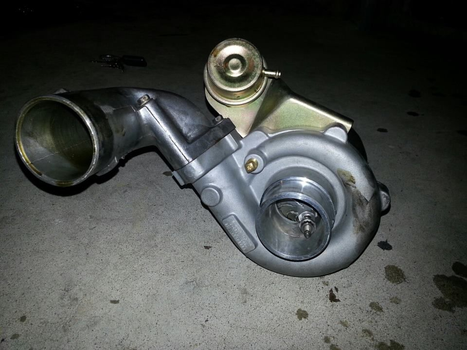
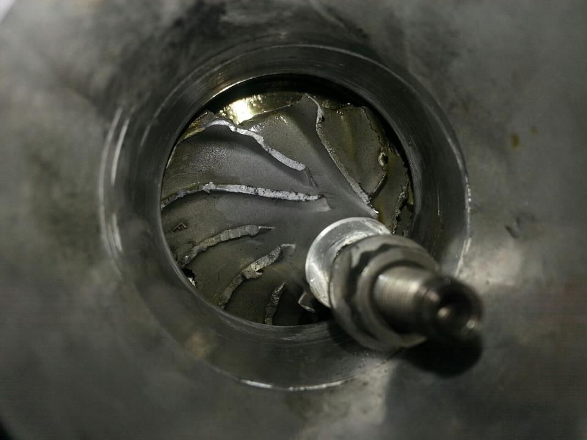

-
Timbo, from what I've heard, Monsta is an Australian distributor of shit Chinese turbos that basically import them and perform quality control. If it's Monsta, it won't be anywhere near as good as a Garrett, but you'll generally get a "good" turbo out of them. Dunno about warranty though, is there any? Their exhaust manifolds, however, are made of too thin metals and warp.
Also, aren't you only getting small power out of the T70 on 15-20 psi? Like, similar power to people with T04E's?
-
Yeah, 240rwkw at 14 was when it was last measured… I didnt think it was too bad for a standard tune but?Straya, +61 -
There's no denying that the Chinese-built 'noname' turbochargers have gotten way better in the 5+ years since this thread was started. I'll probably never buy another one anyway, but many more people are having success stories recently. -
My friend bought a pretty well done rb25 s13. The oem turbo went out and since the PO was selling it, he threw on an ebay turbo.
Wasn't even boosting, just driving down the road.

 -
I run another ebay turbo… Has seen 35 psi more than once (supposed to, not an OH SHEET). Still perfect. Has seen excessive heat at drags (10" fan, and very little cool time = hotter and hotter), to the point where running 15 22 and 28 psi had the same mph, and times.... Still GREAT like new condition… Probably close to 6,000 miles on it, just a guess might be alot less.... In fact probably not even 3,000 miles yet, but there BEATEN miles. -
Ahh, looks like that nut unscrewed itself… Im pretty sure the cheaper ones have the same thread for a normal and a mirrored turbo and yeah, they unscrew themselves if they have the wrong thread on it… Straya, +61
Straya, +61 -
Well i did note my turbine shaft threads on mine did not have any thread locker.
Oil starvation can cause that as well. Turbine shaft expands, grabs hold of shit and it's game over.
No, i'm not here making assumptions on what happened inspector gadget style.... Just comparing some observations for discussion purpose.vg30'd s13 in progress. Shocks. Pegs. Lucky. -
go go gadget ebay turbo!Straya, +61 -
I bought a XS power turbo from a guy of Craig's list, good thing i haven't installed it yet! Looks like I'll be selling it and getting a GOOD one. Thanks for the info!"Is that a Opel?" -
Some of the wheel combos they use in turbines you should take note of when ordering a turbo. CONTACT the seller/mfg before you buy.
Snail fighter store (on ebay) offers 1 year warranty with optional 3 year warranty on all their turbos. Godspeed also has a 1 year warranty. They do honor it. Buy from companies that stand behind their product. You get some as-is b/s and it shits the bed on you, you are left with a paperweight. And as the T25/t28 above with a shredded wheel and probably bent shaft, there's no coming back from some instances...... out the box my snail fighter turbo you could tell wasn't a generic china copy. The balancing methods are different and the serial tag is blank. They are very open to questions and answer truthfully without run around dodgy "buy or leave" tactics. Shaft was tight as a glove out the package!
I have seen 2 damaged cx racing turbos. one had shaft play out of the box i purchased. Another came from someone else who underwent thrust bearing failure. It started smoking really bad, oil all in the downpipe and intercooler. Ate the compressor wheel. Both turbos were pulled before they were past the point of saving. The thrust bearings pooped on both turbos. The one that ate the wheel had cracks on the bronze 270* bearing!
Friend of mine has a godspeed t70 with 63 a/r turbine on his rb25. he beats the hell out of that car around 17-18 psi and hasn't had a single issue. He said it was kinda laggy but when i rode in the car it felt like it pulled really hard. Several of his cars have ran off brand turbos without problems. He doesn't discriminate. Garrett, holset, turbonetics. Doesn't matter. Some people just throw stuff together and run with it.vg30'd s13 in progress. Shocks. Pegs. Lucky. -
That's interesting, I've never heard of snail fighter. May have to look into one of those. Does anyone know if the Nissan T3 uses a standard bolt pattern for the exhaust side? So if I were to buy a T3/T4 would the O2 housing bolt up to it so I can use my CM downpipe, or would I have to get something made?Prius… because Pretentious wouldn't fit across the back of the car…
Cheap, Fast, Reliable - pick any two
My 1986 Turbo Build -
My ebay turbo came with 2.5" outlet with v-band. Modified my exhaust to work with it.jaqattack02;348763 wrote: That's interesting, I've never heard of snail fighter. May have to look into one of those. Does anyone know if the Nissan T3 uses a standard bolt pattern for the exhaust side? So if I were to buy a T3/T4 would the O2 housing bolt up to it so I can use my CM downpipe, or would I have to get something made?
I couldn't find any housing with the 7 bolt pattern. -
Ok, so our 7 bolt isn't a standard pattern.ajaxism;348765 wrote: My ebay turbo came with 2.5" outlet with v-band. Modified my exhaust to work with it.
I couldn't find any housing with the 7 bolt pattern.Prius… because Pretentious wouldn't fit across the back of the car…
Cheap, Fast, Reliable - pick any two
My 1986 Turbo Build

Copyright © 2006–. All rights reserved. Privacy Policy